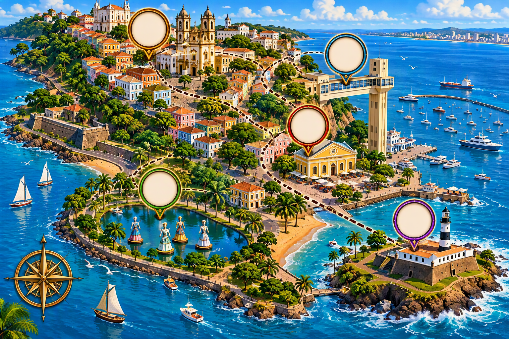

Cinco relíquias históricas desapareceram. Percorra Salvador, resolva enigmas, investigue monumentos e encontre as pistas que levarão à recuperação da memória da cidade.

Você encontrou a primeira relíquia. A Chave da História desbloqueia novos conhecimentos sobre Salvador.
A bússola usada pelos antigos navegadores foi recuperada. Ela aponta agora para novas pistas escondidas no Mercado Modelo.
Escolha a alternativa que contém apenas informações relevantes.
Você recuperou o símbolo que representa a diversidade cultural, artística e histórica de Salvador.
A luz do conhecimento ilumina o último caminho da jornada. A aventura agora segue para o Dique do Tororó.
Durante toda a jornada você precisou resolver problemas, analisar pistas e tomar decisões.
Você encontrou a última relíquia. A memória histórica, cultural e patrimonial de Salvador foi restaurada. Agora você está pronto para se tornar um Guardião do Patrimônio.
Este certificado reconhece que:
Parabéns, Aluno . Você concluiu com sucesso a missão de preservação da memória histórica de Salvador.
✅ Decomposição
✅ Reconhecimento de Padrões
✅ Abstração
✅ Algoritmos